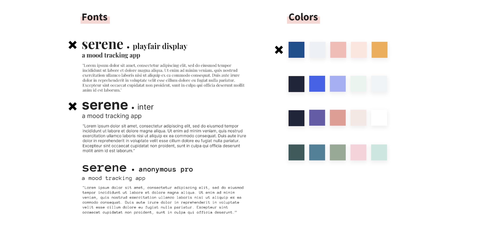

high fidelity prototype.
Part I: Creating a High Fidelity Prototype on Invision
Next, we created another interactive prototype that was high-fidelity in look and medium-fidelity in breadth. We used this prototype to explore the graphic design of our final implementation. We layed out controls, as we wanted them to appear in our final implementation and gave thoughtful consideration to colors, fonts, alignment, icons, and white space.

As a group, we made decisions about color scheme, typography, etc, and created the screens necessary for a user to go through at least one of the tasks that we previously mentioned on the User Analysis page.
Part II: Design Rationale for the High Fidelity Prototype
Typography:
We chose Playfair Display for headers, and Inter for subheadings and body text. We wanted to choose
a serif-font for the title to give our app a clean and professional feel. We chose Inter for most of
the subheadings and body text to make it clear and easy to read. It’s hard to go wrong with sans-serif
fonts, and Inter has a wide variety of thicknesses. We were able to add design variation through our
texts using character space, capital letters, and varying font weights.
Color:
We chose a combination of blue, pink, and white because of it’s calm vibe. We
made sure to choose one dark, one mid-value, and one light color. We also made sure to not use highly
saturated colors. As a result, we were able to layer different components and text. For example, we
made our buttons dark blue, and the text white. Thus, the text was easily readable. Additionally, we
used different shades of the dark blue by altering the opacity of the color. Thus, we made sure that
all shades were the same hue, just with slightly different values. This allowed the colors to seem
much more consistent and flow together nicely.
Graphic Design Choices:
We emphasized simplicity by making sure that pages were not cluttered. Visual aspects were large for easy
viewing (like Buttons, Icons, Text), and we kept all activity icons black for consistency and less visual
disruption. To keep a feeling of personalization and warmth, we included a human figure on the confirmation
page. Additionally, we used emoticons from iOS to match the phone type and so that the figures felt
familiar to users (it’s something almost all young people use in text conversations). A baby blue
background and soft edges were also kept consistent for a docile peaceful look. Finally, the “After
Logging Homepage” has a graphic displaying an active scene that evokes a lively feeling of continuation
and makes you feel like you want to move.
